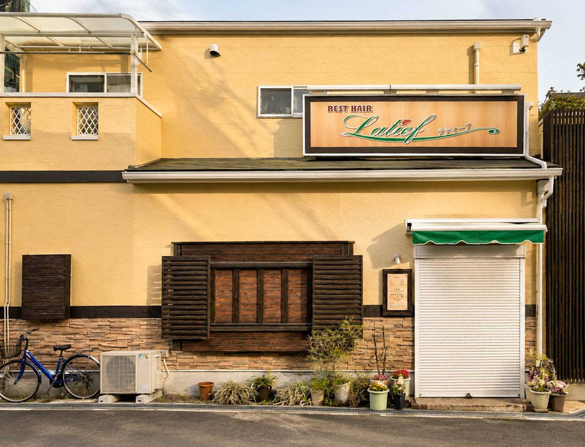

Concept
髪の悩みに、丁寧に向き合う東大阪のヘアアトリエ
髪質改善・縮毛矯正・カラーを中心に、髪の状態や履歴を確認しながら施術を設計する完全予約制の美容室です。

Message
他店で断られた髪も、まずはご相談ください
Latief Atelierは、Latief店舗内の別ブランドとして、髪質改善・縮毛矯正・カラーを中心に、髪の状態や履歴を丁寧に確認しながら施術を設計する完全予約制のヘアアトリエです。
「ダメージや加齢で髪が細くなり、縮毛矯正が難しくなった」「ブリーチやハイトーンカラーで髪が扱いにくい」など、髪のお悩みに一人ひとり合わせて向き合っています。
現在通われている美容室や、長年担当されている美容師さんを無理に変える必要はありません。髪のお悩みだけ相談したい方も、LINEでお気軽にご連絡ください。
LINEで髪の相談をするDesign
一時的な艶だけではなく、これから先も扱いやすい髪へ
長年、髪の研究と薬剤設計に特化してきた経験をもとに、髪質・履歴・ダメージレベルを見極めながら、トリートメント、縮毛矯正、カラー、パーマ剤までオーダーメイドで調合しています。
髪質やダメージの仕方は人それぞれです。珍しいケースであっても、原因を考え、解決方法を探していきます。毎日の髪のストレスを少しでも減らし、日常を心地よく過ごせるように整えます。
Local SEO
東大阪市金岡で、髪質改善と縮毛矯正を相談できる美容室
弥刀駅・久宝寺口駅から徒歩圏内。東大阪市金岡・弥刀・久宝寺口周辺で美容院や美容室を探している方、ヘアカットやカラーと合わせて髪質改善を相談したい方にもご利用いただけます。